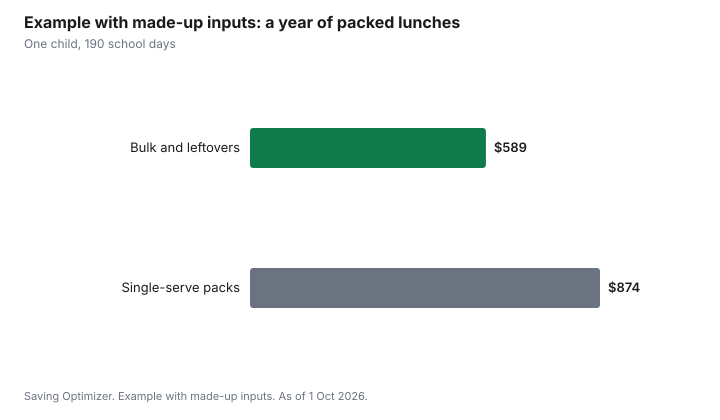

Kids · Canada
School Lunches in Canada: Packed vs Program Costs and the National School Food Program
The cheapest school lunch in Canada is the one you price per lunch and plan for the week. A packed lunch costs what goes into it, and a few staples bought in bulk keep that number steady. A school meal program, where your school has one, may cost less or nothing, depending on the program. The National School Food Program Act received Royal Assent on 26 March 2026 and sets a federal framework, but it does not put a meal in any named school, so ask your school what it offers this year.
Key takeaways
- Price a packed lunch per lunch: add up a week's groceries for lunches and divide by the number of lunches.
- Cooking ahead, reusable containers and a short rotation of meals keep the cost per lunch steady.
- The National School Food Program Act received Royal Assent on 26 March 2026. It sets a federal vision, funding commitment and principles.
- Whether your child's school serves meals, and at what cost, depends on the school and province. Ask the school.
- Example with made-up inputs: a packed lunch at $3.10 for 190 school days is $589 a year.
Price a packed lunch per lunch
Write down one week of lunches for each child. Price the groceries that go into them, using your receipts or the shelf price. Divide by the number of lunches. That number lets you compare a sandwich week with a leftovers week, or with a school program, on the same footing.
| Step | What to do |
|---|---|
| 1 | List a week of lunches per child |
| 2 | Price the groceries that go into them |
| 3 | Divide by the number of lunches |
| 4 | Multiply by school days for a yearly figure |
Keeping the cost per lunch down
- Rotate a short list of lunches the child will eat. Food that comes home uneaten is the most expensive lunch.
- Cook once for dinner and lunch. Leftovers in an insulated container cost less than single-serve packs.
- Buy staples in larger formats and portion them into reusable containers.
- Use store brands and unit prices. The family grocery guide covers the method.
- Pack snacks from a weekly bin so the week's supply is visible.
School meal and snack programs
Some schools run breakfast, snack or lunch programs, funded by a mix of provincial governments, boards, charities and families. Some are free, some ask for a voluntary contribution, and some charge per meal. Ask the school three things: what is served, on which days, and what it costs. If a program exists, ask how families who cannot pay are included, since many programs are designed so that no child is singled out.
The National School Food Program
The National School Food Program Act received Royal Assent on 26 March 2026 and came into force that day. Its purpose is to set out the federal government's vision, a commitment to funding and principles for working with provinces, territories and Indigenous governing bodies. It does not itself list schools or meals. Employment and Social Development Canada publishes updates on the program and agreements with provinces and territories. For your child, the school is the source of what is actually served.
Allergies and school policies
Schools often have allergy-aware or nut-free policies. Check the school's policy before buying in bulk, so a large pack of a snack does not turn out to be one the school does not allow.
Federal funding behind school food
The federal government announced the National School Food Program in 2024 as a $1 billion, five-year investment, with a goal of providing meals to up to 400,000 more children each year. By March 2025, the federal government had signed bilateral agreements with every province and territory, generally covering 2024-25 to 2026-27. Provinces and territories decide how the money flows to schools and community programs, so what your child's school offers depends on your province, board and school.
| Level | Role |
|---|---|
| Federal government | Funding through agreements with provinces and territories; national policy and principles |
| Province or territory | Decides how funds are used; may run its own school food program |
| School board and school | Chooses and runs programs; sets any fees or voluntary contributions |
| Community partners | Many programs rely on charities and volunteers |
Step by step: a week of cheaper lunches
- Ask the school what programs run on which days, and what they cost.
- Plan lunches for the remaining days on Sunday, using dinner leftovers for at least two.
- Buy staples in larger packages and portion them into reusable containers.
- Make one larger recipe, such as muffins or pasta salad, that covers several days.
- Keep a short list of five lunches your child will eat, and rotate them.
- Check the price per lunch once a month with your receipts.
Gear that pays back
Reusable containers, an insulated bag and an ice pack cost money up front but replace single-serve packaging. An insulated food jar lets you send hot leftovers. Label everything; lost containers are a hidden cost. Buy gear on back-to-school sales and check the school's rules on heating food, since many schools have no microwave access for students.
Common mistakes
- Buying single-serve packs by default.
- Packing foods your child will not eat, which come home or go in the garbage.
- Not asking whether the school program is free or has a voluntary fee.
- Buying bulk snacks the school's allergy policy does not allow.
- Planning lunches day by day instead of for the week.
Example with made-up inputs: a school year of packed lunches
These numbers are an example with made-up inputs, not grocery prices. A packed lunch costs $3.10 when built from bulk staples and leftovers, and $4.60 when built from single-serve packs. Over a made-up 190 school days, that is $589 versus $874, a $285 gap for one child. A free school snack program on two days a week would trim the packed total further.
| Approach | Cost per lunch | Yearly cost |
|---|---|---|
| Bulk staples and leftovers | $3.10 | $589 |
| Single-serve packs | $4.60 | $874 |

Sources
- National School Food Program Act, S.C. 2026, Justice Laws, as of 1 Oct 2026. Royal Assent 26 March 2026; in force on assent; purpose: federal vision, funding commitment and principles.
- Employment and Social Development Canada, National School Food Program updates, as of 1 Oct 2026.
- Employment and Social Development Canada, National School Food Program: $1 billion over five years from 2024-25; up to 400,000 more children a year; bilateral agreements with all provinces and territories by March 2025, as of 1 Oct 2026.
- The $3.10 and $4.60 lunch costs and 190 school days in the example are made-up inputs.
Frequently asked questions
How much does a packed school lunch cost in Canada?
It depends on what goes in it. Price a week of lunches from your receipts and divide by the number of lunches to get your own cost per lunch, then multiply by school days for a yearly figure.
What is the National School Food Program?
The National School Food Program Act received Royal Assent on 26 March 2026. It sets the federal vision, a funding commitment and principles for working with provinces, territories and Indigenous governing bodies. It does not name schools or meals; ask your school what is served.
Does my child's school offer free lunch?
It depends on the school and province. Programs may be free, ask for a voluntary contribution, or charge per meal. Ask the school what is served, on which days and at what cost.
How can I make school lunches cheaper?
Rotate a short list of lunches your child will eat, use dinner leftovers, buy staples in larger formats and portion them, and compare unit prices and store brands.
Can a school lunch program exclude families who cannot pay?
Many programs are designed so no child is singled out. Ask the school how families who cannot contribute are included.
How much funding does the National School Food Program have?
The federal government announced it in 2024 as a $1 billion, five-year investment aiming to reach up to 400,000 more children a year, delivered through agreements with every province and territory.
Who decides what school food program my child gets?
Your province or territory decides how funds are used, and your school board and school choose and run programs. Ask the school what is offered.
Researched and drafted with AI assistance and fact-checked against official Canadian sources. How we create content.
Disclosure: Lunch containers and grocery stores are described as offer types; none is ranked. Saving Optimizer may earn a commission if a partner link is added later; no partnership is claimed. Education only.